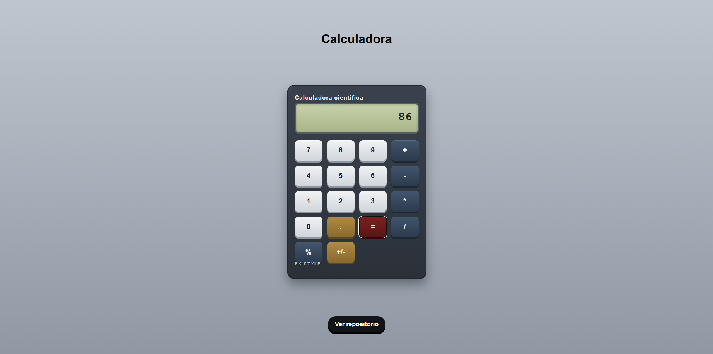

No. 001
Tipo Página web
Calculadora Web
Calculadora enfocada en operaciones básicas con test y Storybook funcionales.
Tecnologías
Qué demuestra
El objetivo de este proyecto es practicar los conceptos alrededor del diseño de aplicaciones en base a componentes. También aplicar testing, linting y Storybook.
Reflexión
Este proyecto me ayudó a ver cómo funcionan el testing, linting y Storybook. En mi opinión son útiles para proyectos grandes para comprobar si algo falla y evitar acumular errores.